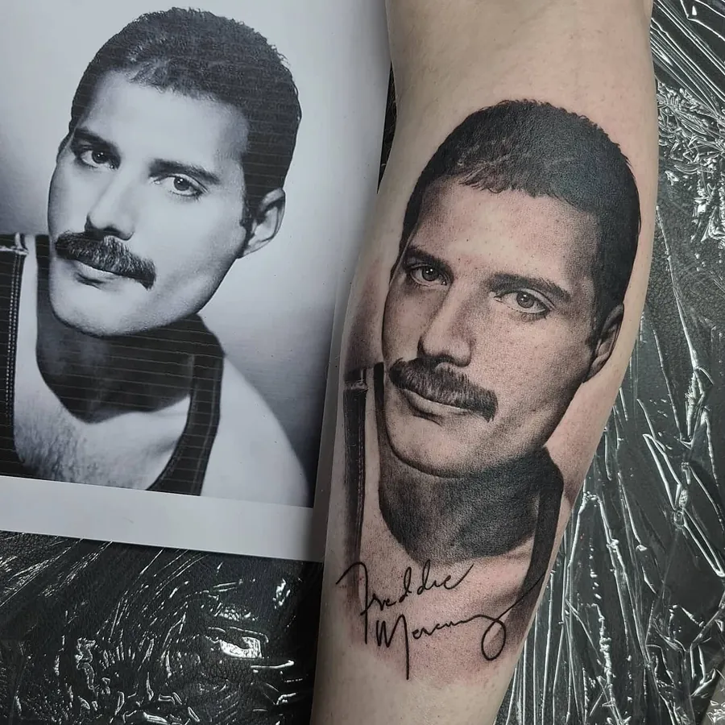

01
Kim
Oprichter · realismeLeerde zichzelf in 2009 tatoeëren en opende Point Black in 2014. Er is weinig wat hij niet aankan, maar zijn hart ligt bij realistisch black & grey: portretten, sleeves en backpieces.
Black & greyHyperrealismePortrettenSleeves
